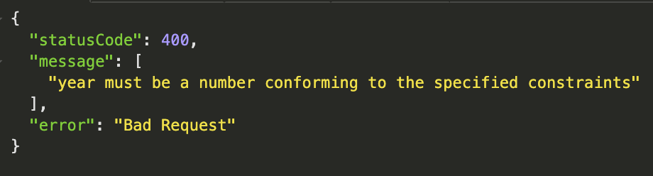

(NestJS) ValidationPipe()
NestJS 에서는 AutoValidation 기능을 해주는 사랑스러운 아이가 있다..!
@nestjs/common 에 있는 ValidationPipe 라는 아이.
const app = await NestFactory.create(AppModule);
app.useGlobalPipes(
new ValidationPipe({
whitelist: true,
forbidNonWhitelisted: true,
transform: true,
}),
);
위와 같이 사용하는데, useGlobalPipes 는 전역적으로 검사를 시키겠다는 의미로 받아들이면 된다.
ValidationPipe 에서 주로 사용하는 옵션은 위와 같은데 하나 씩 살짝 맛보자면
-
whitelist: DTO 의 검증을 해준다, 예를 들어 DTO 에
title이라는 속성이 String 이어야 한다면@IsString()과 함께 쓰여 실제로 들어온것이 스트링인지 확인해주고, 아니라면 오류를 뱉어내준다. -
forbidNonWhitelisted: DTO 에 없는 것을 알려준다, 의도된 공격을 막을 수 있다.
- transform: 이 아이가 난 좋은데, 예를 들어 Get 요청시에 들어오는 값들은 모두 스트링이 되는데 id 와 같은 것의 경우에는 Number 형의 경우가 많다. 이럴 때 숫자로만 이루어진 경우에는 자동으로 변환해주는 등 타입에 맞게 알아서 변환해준다.
- skipMissingProperties: 권장하진 않지만, 유효성검 사를 모두 패스하고 싶을때 사용한다.

위와 같이 자동으로 유효성검사해주고 알아서 에러를 뱉어내주니 얼마나 감사한가…
사랑해